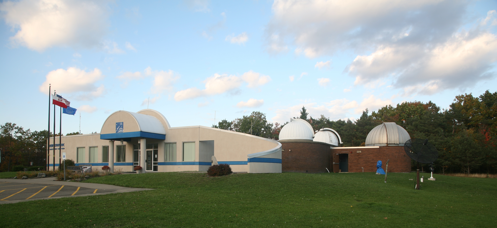

Welcome to Kopernik Observatory & Science Center
The Kopernik Observatory & Science Center opened in 1974, built by Kopernik Society of Broome County, to commemorate the 500th anniversary of Mikolaj Kopernik, the man know as father of modern Astronomy.Since that time, hundreds of thousands of children and adults have experience the wonders of science thought the Observatory's programs.
Located atop a 1720 foot hill in Vestal, NY, 13 iles southwest of Binghaton, NY, the Observatory has been one of the best-sited and best-equipped public Observatories the Northeast of the United States.
The Kopernik Observatory is the first science laboratory facility in New York State designed for teachers, students K-12, and their families. Its mission is provide hands-on experience using telescopes, computers and other tools encouraging the discovery of the wonders of the Universe.